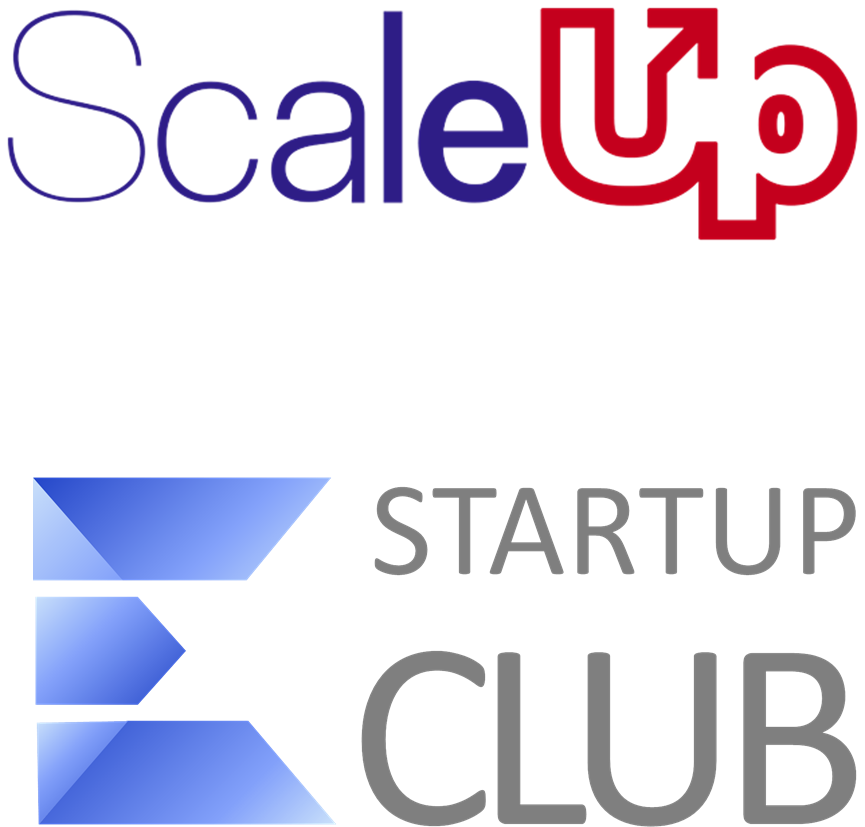

Empower Your Business with Boster Programs
Unlock Success with Boster's ScaleUp Accelerator and Startup Club
Since 2002, Boster has been the backbone of numerous growth programs for entrepreneurs. The Center offers two pivotal programs: the ScaleUp accelerator and Startup Club. These initiatives are designed to provide aspiring and existing entrepreneurs with the tools they need to reach new heights. The ScaleUp program is a 9-month extensive training module that includes interactive sessions, personalized mentoring, and networking events. Participants engage in 10 interactive training sessions, at least 10 networking events, and 18 one-on-one meetings with seasoned mentors. These elements work together to ensure entrepreneurs receive comprehensive guidance and resources, helping them scale their operations. Notably, the ScaleUp program features training on diverse topics such as strategic planning, marketing, digital marketing, sales management, personnel management, and more. Similarly, Startup Club focuses on fostering connections among startup founders, providing access to a wealth of resources and guidance. Entrepreneurs gain the chance to collaborate with like-minded individuals, explore new business opportunities, and expand their networks.
Key Organizations Supporting Entrepreneurship
Boster collaborates with numerous organizations to ensure its programs are effective and beneficial for participants. One such collaboration is with the Entrepreneurs' Organization, a global network that helps entrepreneurs grow through peer-to-peer learning, networking, and mentor relationships. Another significant partner is the Global Entrepreneurship Network, which operates in over 170 countries to build an entrepreneurial ecosystem that supports innovation, job creation, and economic growth. The Ewing Marion Kauffman Foundation provides extensive research and resources to foster a more inclusive and innovative entrepreneurial environment. Additionally, collaborations with US Department Of State initiatives promote international entrepreneurial efforts, enhancing the global reach and impact of the programs offered by Boster.
